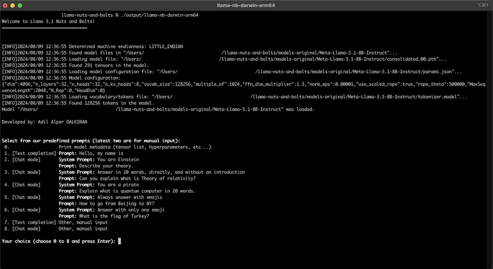
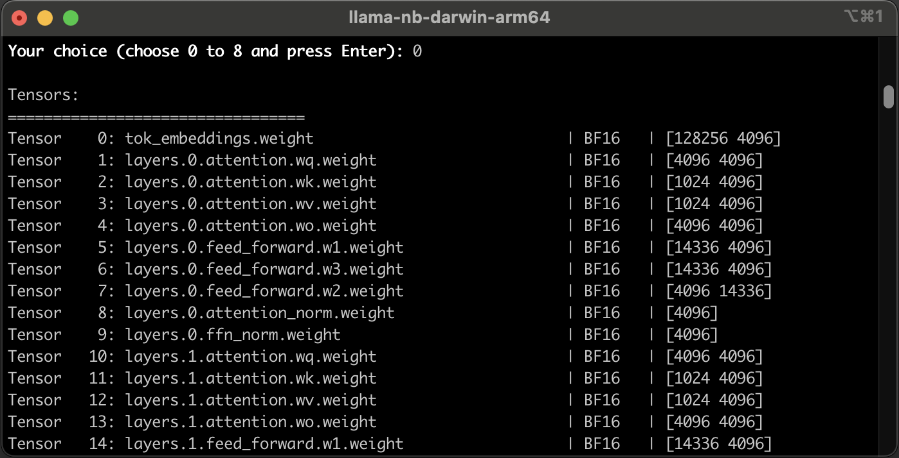
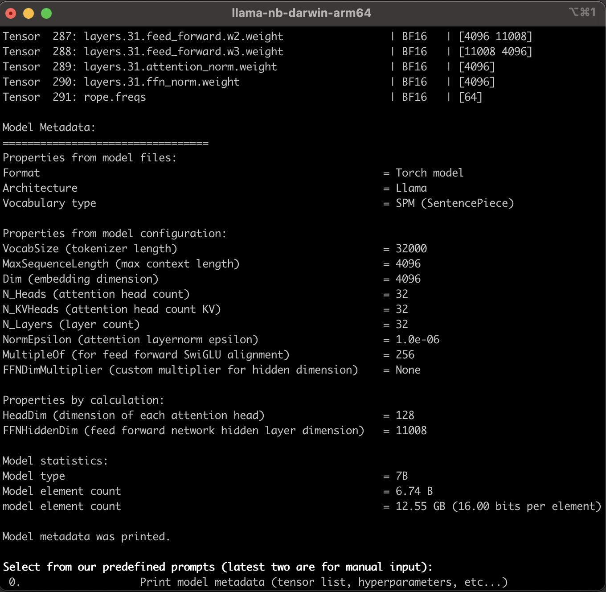
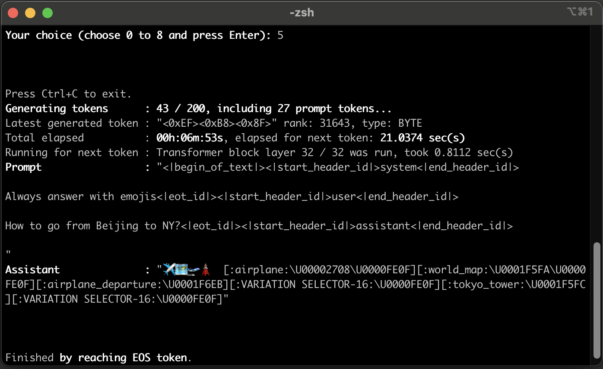

Llama Nuts and Bolts¶
Llama Nuts and Bolts¶


Welcome!
This documentation website is a customized version of original documentation of the Llama Nuts and Bolts repository. You can find the running Go implementation of the project codes in this repository.
A holistic way of understanding how Llama and its components run in practice, with code and detailed documentation. "The nuts and bolts" (practical side instead of theoretical facts, pure implementation details) of required components, infrastructure, and mathematical operations without using external dependencies or libraries.
This project intentionally doesn't have support for GPGPU (such as nVidia CUDA, OpenCL) as well as SIMD because it doesn't aim to be a production application, for now. Instead, the project relies on CPU cores to perform all mathematical operations, including linear algebraic computations. To increase performance, the code has been optimized as much as necessary, utilizing parallelization via goroutines.

Llama Nuts and Bolts Screen Recording GIF, captured while the application was running on the Apple MacBook Pro M1 Chip. Predefined prompts within the application were executed. The GIF is 20x faster.
 WHY THIS PROJECT?¶
WHY THIS PROJECT?¶
This project was developed for only educational purposes, and has not been tested for production or commercial usage. The goal is to make an experimental project that can perform inference on the Llama 3.1 8B-Instruct model completely outside of the Python ecosystem. Throughout this journey, the aim is to acquire knowledge and shed light on the abstracted internal layers of this technology.
This journey is an intentional journey of literally reinventing the wheel. While reading this journey here, you will navigate toward the target with a deductive flow. You will encounter the same stops and obstacles I encountered during this journey.
If you are curious like me about how the LLMs (Large Language Models) and transformers work and have delved into conceptual explanations and schematic drawings in the sources but hunger for deeper understanding, then this project is perfect for you too!
 MODEL DIAGRAM¶
MODEL DIAGRAM¶
The whole flow of Llama 3.1 8B-Instruct model without abstraction:

 COVERAGE¶
COVERAGE¶
Due to any of the existing libraries (except the built-in packages and a few helpers) wasn't used, all of the required functions were implemented by this project in the style of Go. However, the main goal of this project is to do inference only on the Llama 3.1 8B-Instruct model, the functionality fulfills only the requirements of this specific model. Not much, not less, because the goal of our project is not to be a production-level tensor framework.
The project provides a CLI (command line interface) application allowing users to choose from predefined prompts or write custom prompts. It then performs inference on the model and displays the generated text on the console. The application supports "streaming," enabling immediate display of generated tokens on the screen without waiting for the entire process to complete.
As you can see in the chapters here, covered things are:
- All diagrams about the model and the flow are listed in Chapter 20,
- Parallelization and concurrency in Go, see Chapter 13,
- Implementing Memory Mapping that allows us to map a large file content to memory address space in Go for both Linux/MacOS and Windows platforms, see Chapter 2,
- Implementing BFloat16 (Brain Floating Point) data type which isn't supported by the Go language, from scratch, see Chapter 7,
- Implementing support for "streaming" output via Go channels, see Chapter 13,
- Loading a PyTorch model weights file ("consolidated.00.pth") which was saved as Pickle (.pkl) format, from scratch, see Chapter 2 and Chapter 3,
- Loading the model arguments JSON file ("params.json"), see Chapter 4,
- Loading a Byte-Pair Encoding (BPE) tokenizer model which was saved as Tiktoken tokenizer format file ("tokenizer.model"), from scratch, see Chapter 5,
- Implementing a Tensor type, tensor aritmetic and machine learning mathematical operation functions, see Chapter 8,
- Working with C contiguous arrays in multi-dimensional form, see Chapter 8,
- Building the blocks of Llama 3.1 model architecture, see Chapter 9,
- Implementing RoPE (Rotary Positional Embeddings) and precomputing frequency tensor, see Chapter 10 and Chapter 10.BONUS,
- Understanding tokens, vocabulary, and tokenization, see Chapter 12,
- Generating the next token, internals of transformer block, being an auto-regressive model, multi-head self-attention, and much more, see Chapter 13, Chapter 14, Chapter 15, Chapter 16,
- Understanding internals of the Unicode Standard, UTF-8 encoding, and how emojis are represented and rendered, see Chapter 17,
- And, so much more!
 INSTALLATION and BUILDING¶
INSTALLATION and BUILDING¶
Installation and building instructions are described at GitHub README.
 RUNNING¶
RUNNING¶
Run the project with executing go run ... command or executing the compiled executable. It's more suggested that to run this project's executable after building it, and without virtualization for higher performance.
When you run the project, you will see the following screen. It prints the summary of the loading process of model files and a summary of model details.

Printing Model Metadata¶
If you select the first item in the menu by pressing 0 key and ENTER, the application prints the metadata of Llama 3.1 8B-Instruct model on the console:
 
Executing a Prompt¶
Alongside you can select one of predefined prompts in the menu, you can select one of latest two items (Other, manual input) to input your custom prompts.
With the [Text completion] choices, the model is used only to perform text completion task. New tokens will be generated according to the input prompt text.
With the [Chat mode] choices, the application starts the prompt with <|begin_of_text|> string to specify "this is an instruction prompt". Also it surrounds the system prompt part with <|start_header_id|>system<|end_header_id|>\n and <|eot_id|> strings to specify this part is a system prompt, surrounds the user prompt part with <|start_header_id|>user<|end_header_id|>\n and <|eot_id|> strings to specify this part is a user prompt.
At the end, a chat mode prompt string will be look like following:
"<|begin_of_text|><|start_header_id|>system<|end_header_id|>
Always answer with emojis<|eot_id|><|start_header_id|>user<|end_header_id|>
How to go from Beijing to NY?<|eot_id|><|start_header_id|>assistant<|end_header_id|>
"
And the output of this prompt is like the following (consists of emojis with their names and unicode escape sequences):

 ASSUMPTIONS¶
ASSUMPTIONS¶
The full-compliant, generic, production-ready, and battle-tested tensor frameworks should have support for a wide range of platforms, acceleration devices/processors/platforms, use cases, and lots of convertibility between data types, etc.
In Llama Nuts and Bolts scenario, some assumptions have been made to focus only on required set of details.
| Full-compliant applications/frameworks | Llama Nuts and Bolts |
|---|---|
| Use existing robust libraries to read/write file formats, perform calculations, etc. | This project aims to reinvent the wheel, so it doesn't use any existing library. It implements everything it requires, precisely as much as necessary. |
| Should support a wide range of different data types and perform calculations between different typed tensors in an optimized and performant way. | Has a limited elasticity for only required operations. |
| Should support a wide range of different file formats. | Has a limited support for only required file formats with only required instructions. |
| Should support top-k, top-p, and, temperature concepts of the LLMs (Large Language Models) to randomize the outputs, explained here. | This project doesn't have support for randomized outputs intentionally, just gives the outputs that have the highest probability. |
| Should support different acceleration technologies such as nVidia CUDA, OpenCL, Metal Framework, AVX2 instructions, and ARM Neon instructions, that enable us GPGPU or SIMD (Single instruction, multiple data) usage. | This project doesn't have support for GPGPU and SIMD (Single instruction, multiple data) intentionally because it doesn't aim to be a production application, for now. However, for a few days, I had tried an experiment with ARM Neon instructions on my MacBook Pro M1, it worked successfully with float32 data type, but with the CPU cycles required to convert BFloat16 to float32 negated the saved time that came with ARM Neon. Also, I've realized that the Go compiler doesn't have support for 2-byte floats, even though I've tried using CGO. So, I gave up on this issue. If you're curious about it, you can check out the single commit on the experiment branch arm_neon_experiment. |
 CONTRIBUTING and SUPPORTING the PROJECT¶
CONTRIBUTING and SUPPORTING the PROJECT¶
You are welcome to create issues to report any bugs or problems you encounter. At present, I'm not sure whether this project should be expanded to cover more concepts or not. Only time will tell  .
.
If you liked and found my project helpful and valuable, I would greatly appreciate it if you could give the repo a star on GitHub. Your support and feedback not only help the project improve and grow but also contribute to reaching a wider audience within the community. Additionally, it motivates me to create even more innovative projects in the future.
 REFERENCES¶
REFERENCES¶
I want to thank to contributors of the awesome sources which were referred during development of this project and writing this documentation. You can find these sources below, also in between the lines in code and documentation.
You can find a complete and categorized list of refereces in 19. REFERENCES chapter of this documentation.
The following resources are most crucial ones, but it's suggested that to check out the 19. REFERENCES chapter:
- Meta Llama website
- Original Llama 3.1 Python package repository of Meta
- Original Llama Toolchain Python repository of Meta
- Georgi Gerganov's llama.cpp
- Wikipedia
- PyTorch Documentation
- Youtube - Andrej Karpathy - Let's build GPT: from scratch, in code, spelled out.
- The Llama 3 Herd of Models
- Llama 2: Open Foundation and Fine-Tuned Chat Models
- Llama: Open and Efficient Foundation Language Models
- Attention Is All You Need
- Youtube - Umar Jamil - Llama explained: KV-Cache, Rotary Positional Embedding, RMS Norm, Grouped Query Attention, SwiGLU
- Youtube - DeepLearning Hero - RoPE (Rotary positional embeddings) explained: The positional workhorse of modern LLMs
- Youtube - Intermation - Computer Organization and Design Fundamentals - Ep 020: Unicode Code Points and UTF-8 Encoding
- Several documents, articles, and code samples: In the code and documentation of this project, you can find several code or document links that were cited.
 LICENSE¶
LICENSE¶
Llama Nuts and Bolts is licensed under the Apache License, Version 2.0. See LICENSE for the full license text.